Code
# Access custom defined functions
targets::tar_source(files = paste0(here::here(), "/R_functions"))In this supplement, we write with the goal of availing these methods to teachers and students of epidemiology, activist-scientists, and scientist-activists who wish to use the methods in their own studies. We define the data structure used for SNACC analysis in the context of MPX NYC study data. We develop mathematical notation, some formalisms, and some measures in the following section. Finally, we describe a hypothetical intervention whose impact we assessed using these measures.
# Access custom defined functions
targets::tar_source(files = paste0(here::here(), "/R_functions"))Conceptually, the MPX NYC spatial participant data network is a network object that contains all collected data. In this network, nodes comprise of community districts and survey participants. Edges can only exist between a person and a communtiy district - they indicate that the person either lives in or has a contact place in that community district. In ?fig-data, participant nodes are blue and community district nodes are pink. Table B.1 shows the node and Table B.2 the edges of the network.
make_example_network_data() |>
plot_example_network(targets::tar_read(config_list))
make_example_network_data() |>
data.frame() |>
dplyr::transmute(name = label, age, type = ifelse(type, "person", "community_district")) |>
gt::gt()| name | age | type |
|---|---|---|
| 1 | 18-25 | person |
| 2 | 18-25 | person |
| 3 | 18-25 | person |
| 4 | 18-25 | person |
| 5 | 26-50 | person |
| 6 | 26-50 | person |
| 7 | 26-50 | person |
| 8 | 26-50 | person |
| A | NA | community_district |
| B | NA | community_district |
| C | NA | community_district |
| D | NA | community_district |
| E | NA | community_district |
make_example_network_data() |>
dplyr::mutate(name = label, type, age) |>
tidygraph::activate(edges) |>
dplyr::mutate(from_name = tidygraph::.N()$name[from], to_name = tidygraph::.N()$name[to]) |>
data.frame() |>
dplyr::arrange(from, to) |>
dplyr::transmute(from = from_name, to = to_name, relation = relation) |>
gt::gt()| from | to | relation |
|---|---|---|
| 1 | A | HOME |
| 2 | A | GSEX |
| 3 | A | PHYS |
| 3 | B | HOME |
| 3 | E | GSEX |
| 3 | E | PHYS |
| 4 | B | HOME |
| 4 | C | HOME |
| 4 | D | HOME |
| 4 | E | GSEX |
| 5 | C | HOME |
| 6 | D | PHYS |
| 6 | E | PHYS |
| 7 | C | HOME |
| 8 | C | GSEX |
The MPX NYC participant network has participants as nodes. A pair of nodes is connected by a weighted edge if each of the individuals represented by the nodes has at least one contact venue or residence in the same, shared community district. The weight of the edge is given by the count of community districts the pair of nodes have in common. By definition, an edge of weight \(0\) is equivalent to the absence of an edge. Table B.3 shows the nodes of the participant network shown in ?fig-data-people and Table B.4 show the edges.
make_example_network_data("people") |>
plot_example_network(targets::tar_read(config_list))
make_example_network_data("people") |>
data.frame() |>
dplyr::transmute(name = label, type = ifelse(type, "person", "community_district")) |>
gt::gt()| name | type |
|---|---|
| 1 | person |
| 2 | person |
| 3 | person |
| 4 | person |
| 5 | person |
| 6 | person |
| 7 | person |
| 8 | person |
make_example_network_data("people") |>
dplyr::mutate(name = label, type, age) |>
tidygraph::activate(edges) |>
dplyr::mutate(from_name = tidygraph::.N()$name[from], to_name = tidygraph::.N()$name[to]) |>
data.frame() |>
dplyr::arrange(from, to) |>
dplyr::transmute(from = from_name, to = to_name, weight) |>
gt::gt()| from | to | weight |
|---|---|---|
| 1 | 2 | 1 |
| 1 | 3 | 1 |
| 2 | 3 | 1 |
| 3 | 4 | 3 |
| 3 | 6 | 2 |
| 4 | 5 | 1 |
| 4 | 6 | 2 |
| 4 | 7 | 1 |
| 4 | 8 | 1 |
| 5 | 7 | 1 |
| 5 | 8 | 1 |
| 7 | 8 | 1 |
The MPX NYC community district network has community districts as nodes. A pair of community districts is connected by a weighted edge when at least one participant has a contact venue or residence in both community districts. The weight is the count of participants which are shared by the two community districts. ?fig-data-places shows the community district network derived from the MPX NYC spatial participant data network shown in ?fig-data. Table B.5 shows list the nodes of the former network, and Table B.6 shows the edges.
make_example_network_data("places") |>
plot_example_network(targets::tar_read(config_list))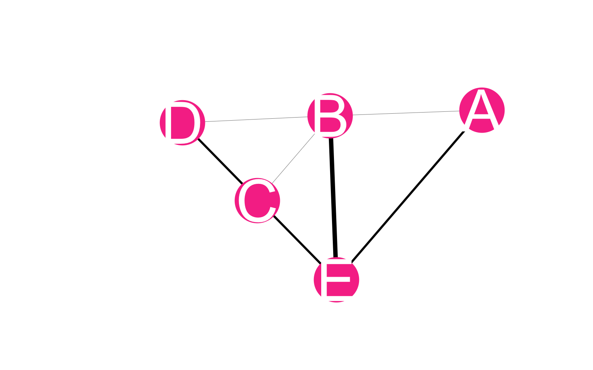
make_example_network_data("places") |>
data.frame() |>
dplyr::transmute(name = label, type = ifelse(type, "person", "community_district")) |>
gt::gt()| name | type |
|---|---|
| A | community_district |
| B | community_district |
| C | community_district |
| D | community_district |
| E | community_district |
make_example_network_data("places") |>
dplyr::mutate(name = label, type, age) |>
tidygraph::activate(edges) |>
dplyr::mutate(from_name = tidygraph::.N()$name[from], to_name = tidygraph::.N()$name[to]) |>
data.frame() |>
dplyr::arrange(from, to) |>
dplyr::transmute(from = from_name, to = to_name, weight) |>
gt::gt()| from | to | weight |
|---|---|---|
| A | B | 1 |
| A | E | 2 |
| B | C | 1 |
| B | D | 1 |
| B | E | 3 |
| C | D | 1 |
| C | E | 1 |
| D | E | 2 |
# Access custom defined functions
targets::tar_source("../R_functions") data <- targets::tar_read(config_list)[[1]][["variables"]]make_table_freq1(age) |>
plot_bar() |>
apply_style_bar_plot()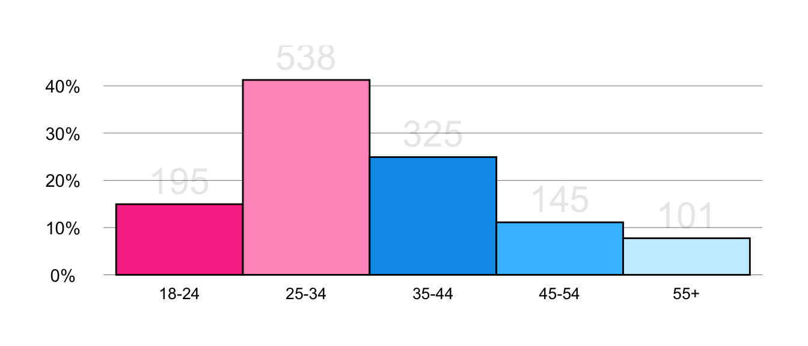
make_table_freq1(channel) |>
plot_bar() |>
apply_style_bar_plot()
make_table_freq1(countPhysicalCut) |>
plot_bar() |>
apply_style_bar_plot()
make_table_freq1(countSexCut) |>
plot_bar() |>
apply_style_bar_plot()
make_table_freq1(covidTestPositive) |>
plot_bar() |>
apply_style_bar_plot()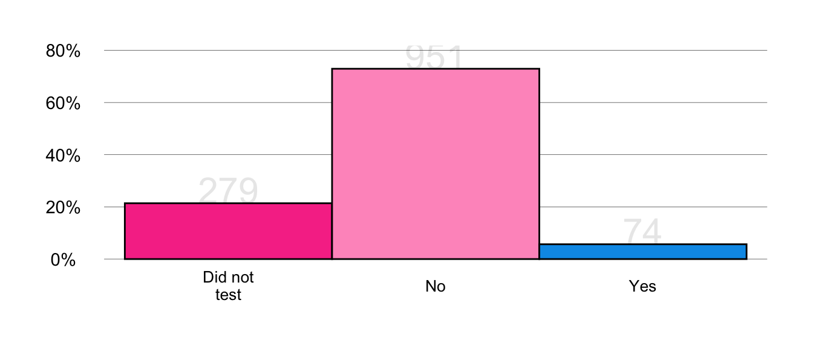
make_table_freq1(createdAtCut) |>
plot_bar() |>
apply_style_bar_plot()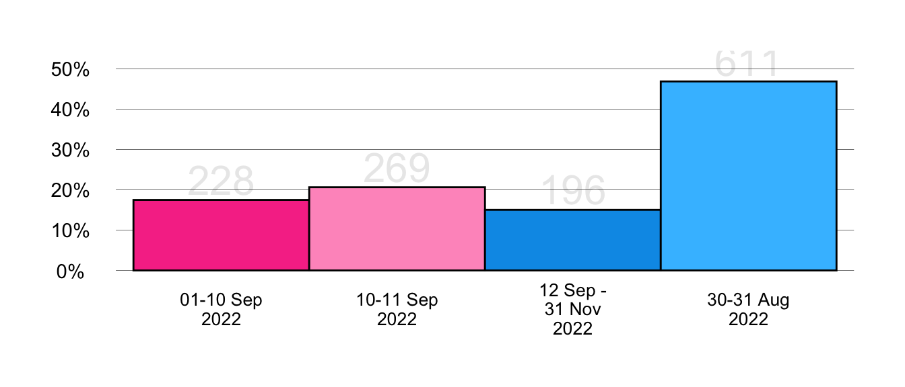
make_table_freq1(gender) |>
plot_bar() |>
apply_style_bar_plot()
make_table_freq1(genderId) |>
plot_bar() |>
apply_style_bar_plot()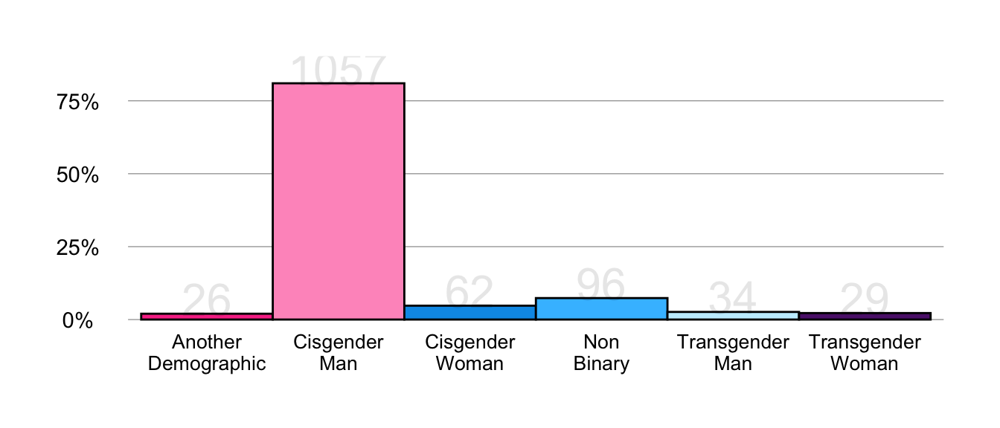
make_table_freq1(groupSex) |>
plot_bar() |>
apply_style_bar_plot()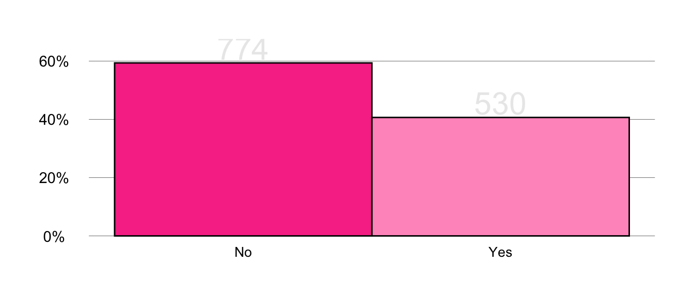
make_table_freq1(hivPrep) |>
plot_bar() |>
apply_style_bar_plot()
make_table_freq1(hivStatus) |>
plot_bar() |>
apply_style_bar_plot()
make_table_freq1(hivSuppressed) |>
plot_bar() |>
apply_style_bar_plot()
make_table_freq1(monkeypoxCare) |>
plot_bar() |>
apply_style_bar_plot()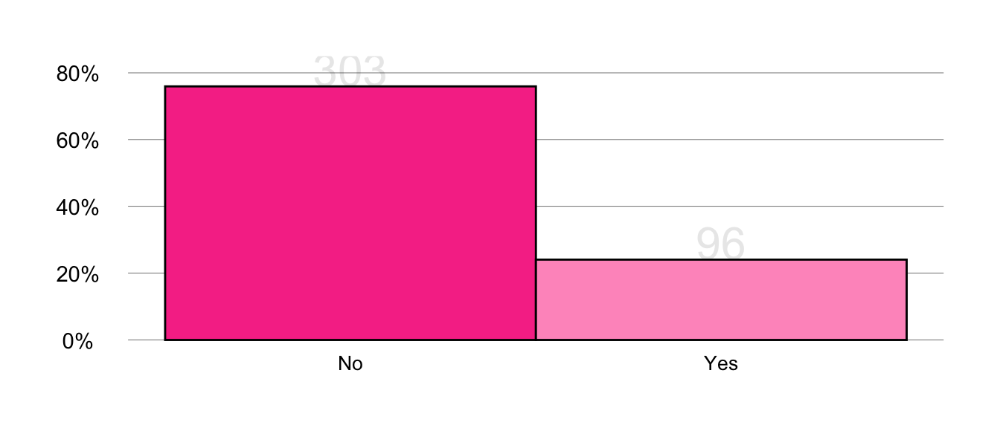
make_table_freq1(monkeypoxTest) |>
plot_bar() |>
apply_style_bar_plot()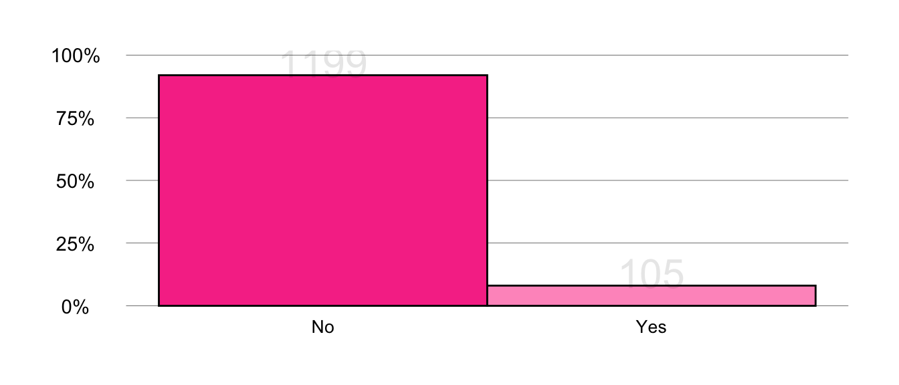
make_table_freq1(monkeypoxVaccine) |>
plot_bar() |>
apply_style_bar_plot()
make_table_freq1(num_symptomsCut) |>
plot_bar() |>
apply_style_bar_plot()
make_table_freq1(placeSex, person_analysis = FALSE) |>
plot_bar() |>
apply_style_bar_plot()
make_table_freq1(placeType, person_analysis = FALSE) |>
plot_bar() |>
apply_style_bar_plot()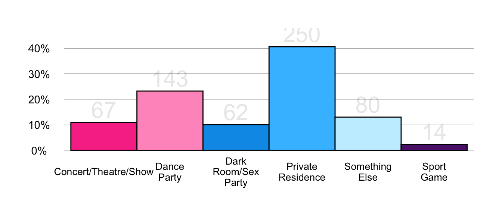
make_table_freq1(race) |>
plot_bar() |>
apply_style_bar_plot()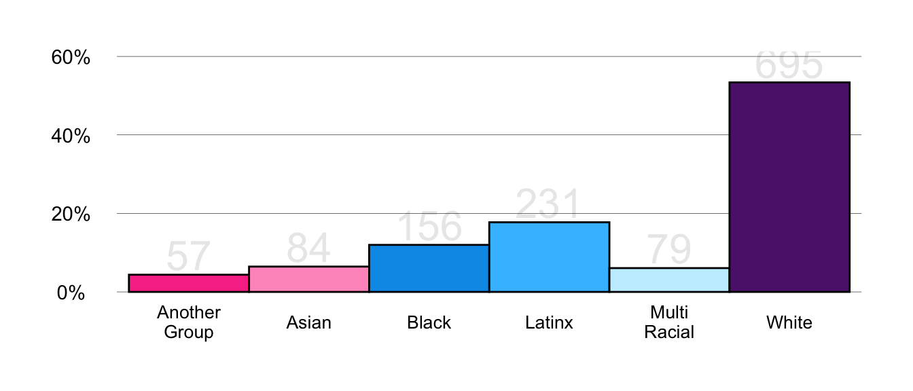
make_table_freq1(sex) |>
plot_bar() |>
apply_style_bar_plot()
make_table_freq1(sexOrientation) |>
plot_bar() |>
apply_style_bar_plot()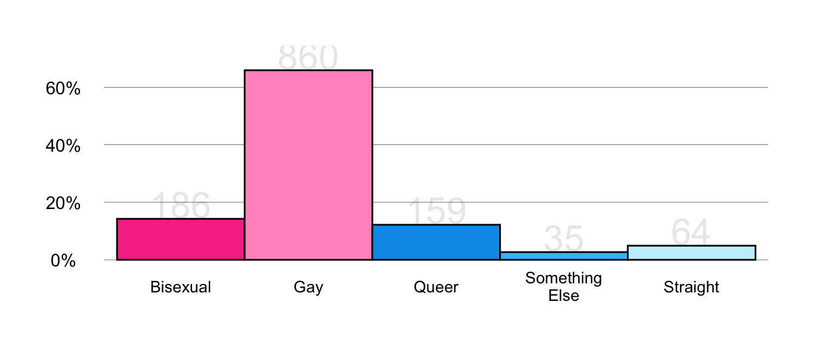
make_table_freq1(travelTimeCut) |>
plot_bar() |>
apply_style_bar_plot()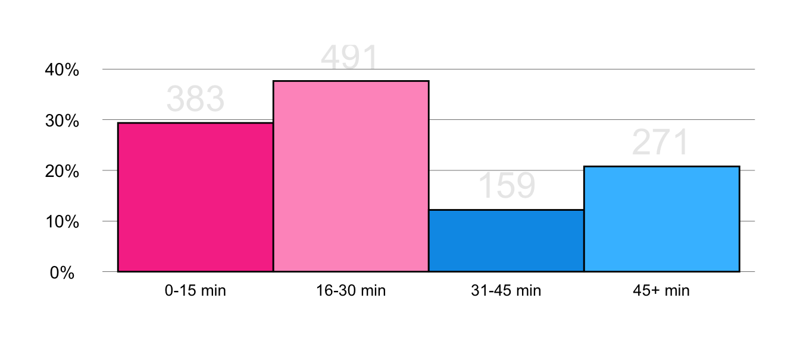